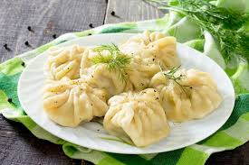

Manty

Manti is a Turkish main dish that consists of spiced lamb meat that's stuffed into pastry parcels and then cooked, before being served with a selection of sauces, including a yoghurt, garlic and mint sauce, melted butter with paprika, as well as a tomato sauce.
Ingredients
- Lamb
- Beef
- Pumkin
- Dough from flour
Steps
- Mix 3 cups flour, 1 tsp salt.
Gradually add 1 cup water, knead into elastic dough.
Rest dough for 30 mins.
- Combine 1 lb ground meat, chopped onion, garlic, salt, pepper, cumin, paprika, and optional herbs.
- Roll out dough, cut circles.
Place filling in the center, fold, and seal.
- Steam manty for 20-25 mins until cooked.